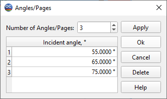

Angles of Incidence
This dialog can be initiated from the Measurement Editor in Spectral mode when you want to add or exclude angles of incidence for which targets are specified.

- Set the desired number of angles in the field Number of
Angles/Pages. A necessary number of rows in the list box will be added (or deleted). After editing angle values, press Apply to apply the changes to the currently edited target. The Delete button removes the currently selected page or a range of pages.
- The OK button also applies the changes and additionally closes
the Angles/Pages dialog. To discard changes, press Cancel.
- You can also use the `Spreadsheet Editing
Tools <idh_spreadsheet_editing.htm>`__ from the main toolbox for easier editing.
Note: The angle of incidence is always specified in the Incident Medium. For back reflectance and similar characteristics, it means that the angle of the Back reflectance should be computed using Snell’s Law if the Exit Medium is different from the Incident one.